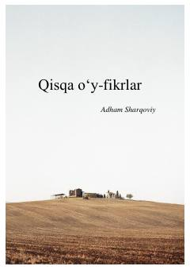

QOHayotiy hikmatlar va chuqur ma'noli qisqa o'y-fikrlar to'plami.
Ushbu kitob yosh arab yozuvchisi Adham Sharqoviyning chuqur ma'noli va qisqa o'y-fikrlari, hayotiy hikmatlari jamlanmasidan iborat. Asar insoniylik, axloq, sevgi va jamiyat haqidagi ta'sirli mulohazalarni o'z ichiga oladi. Kitobxonlarni hayotiy qadriyatlar ustida fikr yuritishga undaydi.